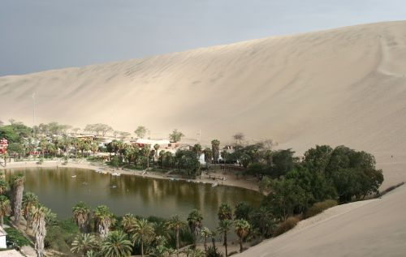
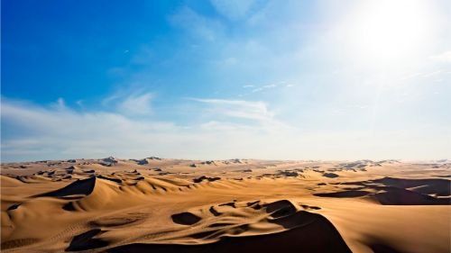

Ica
Ica es un departamento de la República del Perú, integrado por 5 provincias: Pisco, Nasca, Chincha, Palpa y la capital homónima. Si das un recorrido por sus calles descubrirás su rico pasado colonial, con iglesias y haciendas; y sus famosos viñedos que la convierten en la capital vinícola del país, productora de la bebida tradicional: el pisco.

Miluska: Encantador el viaje en carros tubulares por el desierto,
recomendado sentarse lo más adelante posible, ya que el salto del carro puede sentirse
muy fuerte atrás.
Espectacular la vista del Desierto de la Huacachina y practicar sandboard ,
a primera vista es impactante ver las grandes dunas y enfrentarse a estas con
tan solo una tabla.
Es importante llevar agua y gatorade para hidratarte durante todo el recorrido y una buena cámara
para capturar los instantes del desierto.
La Laguna de Huacachina es un oasis natural, rodeado de palmeras, eucaliptos y especies de la zona como el huarango, toñuz y espino. Ubicado en el departamento homónimo, es considerado uno de los mejores destinos turísticos de Ica. Entre las dunas encontrarás verdes aguas en las que podrás bañarte y alquilar botes para dar paseos.
En Paracas, una zona costera de Pisco, se encuentra la Reserva Natural de Paracas, considerada uno de los atractivos naturales de Ica. Hay tantas cosas que ver que es recomendable visitarla en algún tour. Uno de estos abarca la reserva natural y las Islas Ballestas, donde observarás pingüinos, leones marinos y delfines.
El desierto de Ica es una gran formación de arena en el departamento del mismo nombre, y uno de los fascinantes lugares para visitar en Ica. Limita con la ribera del mar de Grau y con los Andes del Perú
Cachiche es un caserío que se cuenta entre los sitios para conocer en Ica de día. Ubicado al sur del departamento homónimo, es un conocido como el Pueblo de las Brujas, porque según sus pobladores era el centro de reunión de mujeres que poseían poderes obrenaturales.